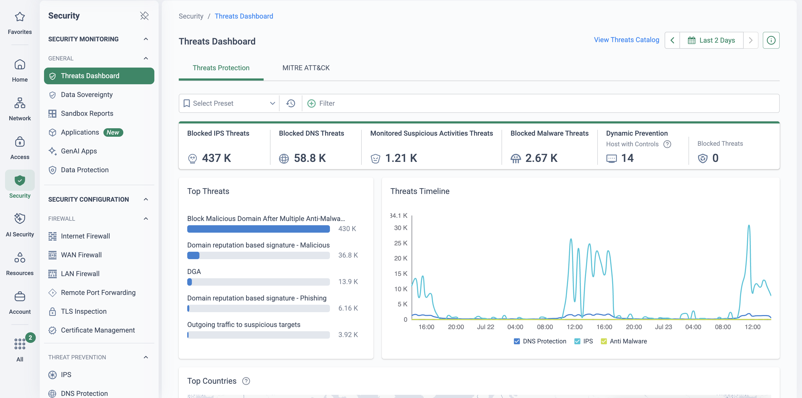
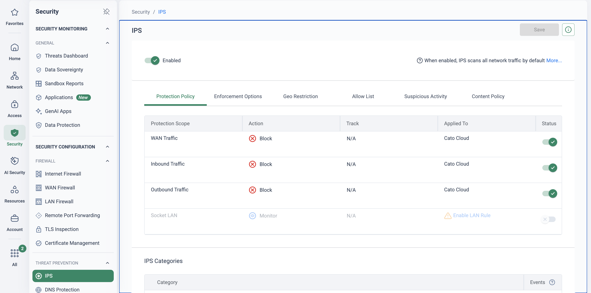
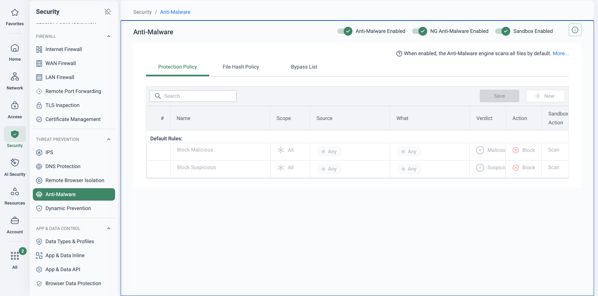

Segment 2 of the 60-minute platform demo, minutes 15 to 20. The SWG segment showed policy the
customer wrote; this one shows the threats they did not see coming, stopped by the same
single-pass engine on the same flow. Five minutes across the Threats Dashboard, the IPS and
Anti-Malware policies and one threat event opened in full — then, where the tenant has one,
the XDR story that groups related events into a single incident.
Every flow already passes the engine, so once IPS and Anti-Malware are enabled they
inspect every user, site and cloud instance by default — there is no uninspected path and no
appliance to add.
Ransomware is not one event but a chain — delivery, exploit, payload, command and control,
lateral movement, exfiltration — and every link has to cross the network. On Cato every flow
from every site, remote user and cloud instance traverses a PoP, where the Single Pass Cloud
Engine inspects it once against IPS, next-generation anti-malware, cloud sandboxing and DNS
security, with TLS inspection at cloud scale. The chain never finds the split-tunnelled laptop
or the branch breakout that appliance-based inspection leaves open.
The second half of the message is who does the work. IPS signatures are written and deployed by
Cato Security Research to every PoP — including protections for newly exploited CVEs — with no
customer change window and nothing to patch at the edge. And because the events already share
one data lake, one identity model and one timeline, Cato XDR correlates the weak signals into a
single story without a SIEM project. Audiences that run a mixed estate of firewalls, IPS boxes
and a separate VPN stack hear this as the removal of a patch cycle per box — firewall, IPS appliance and VPN
concentrator alike.
The five-minute story
Say it, then show it
Bridge in — from Secure Web Gateway
“That was policy you wrote. Now the threats you did not see coming — same engine, same flow, no extra appliance.”
Beat 1 — what the cloud stopped this week
Say: every number on this dashboard was caught because the traffic had to pass a
PoP — there is no “behind the firewall” here, and nothing was deployed to produce the view.
Show: the Threats Dashboard — blocked IPS, DNS and malware threats by engine,
the top signatures, the timeline, and the MITRE ATT&CK tab beside it.
Beat 2 — on by default, maintained by Cato
Say: when IPS is enabled it scans all network traffic by default, and the
Anti-Malware engine scans all files by default; the signatures are written and deployed by Cato
Security Research, so there is nothing here for the customer to patch or update.
Show: the IPS protection scopes — WAN, inbound, outbound — each set to Block;
then Anti-Malware with the NG Anti-Malware and Sandbox toggles and the two default rules,
Block Malicious and Block Suspicious.
Beat 3 — the event, then the story
Say: each block is an attributed event — user, signature or verdict, action — and
when several of those events belong to one attack, the platform groups them into one story
with a timeline and ATT&CK mapping, so fifty alerts become one incident.
Show: one IPS or Anti-Malware event opened in Monitor → Events, then one story in
the Stories Workbench. If the tenant has no story to show, stop at the event and say what
the story adds.
Bridge out — to CASB
“Threats are what comes in. Next is where your data goes: the SaaS applications people adopted without asking.”
On the platform
Where this sits in the Cato SASE platform
1Priya on the Cato Client and the Bristol Office Socket send every flow to the nearest PoP.
2The engine inspects each flow once against IPS, anti-malware, the cloud sandbox and DNS security.
3Clean traffic continues; malware, exploits and C2 beacons are blocked at the PoP and recorded as events.
4The same events feed the Threats Dashboard and, when they belong together, one XDR story.
What the engine does
One pass, every engine, one verdict
A user on the Cato Client and a site behind a Socket send their traffic to the nearest PoP.
The single-pass engine inspects each flow once against IPS, next-generation anti-malware,
the cloud sandbox and DNS security. Clean traffic continues to the internet; a malicious
download, an exploit attempt or a beacon to attacker infrastructure is blocked at the PoP and
recorded as an attributed event. The same events feed the Threats Dashboard and, when they
belong together, an XDR story.
Encrypted tunnel — Client and Socket to the PoPClean traffic — inspected and forwardedThreat — blocked at the PoPInbound attempt — stopped at the PoPTelemetry — dashboard, events, stories
Both sources, one engine, one verdict. The block never depends on where the user sits, and the event it produces is the same record the dashboard and the XDR story are built from.
🔍
No unexamined path
Site, cloud and remote-user traffic all pass the same engines, with TLS inspected at cloud scale and no appliance capacity to ration. The kill chain never finds the route it depends on.
🩹
Virtual patching buys time
Cato Security Research pushes IPS protections for newly exploited CVEs to every PoP, inbound and outbound, without customer involvement — shielding systems while the patch window catches up.
🧩
Correlation without a SIEM project
XDR stories with MITRE ATT&CK mapping are native to the platform. The signals are correlated the moment they are generated, in the console the team already uses.
🏭
Laptops and PLCs alike
Remote users, branch sites and agentless OT/IoT devices get identical protection — the policy follows the traffic, not the device's ability to run an agent.
Demo runbook
Minutes 15 to 20 — four screens
Before you start the clock
Have Monitor → Events already filtered to IPS and Anti-Malware events for the last few days, and
— if the tenant has one — a story open in a second tab. The segment is five minutes; finding the
right event live is where it slips.
Open on the threat landscape 1 min
Monitor → Threats Dashboard(Security → Threats Dashboard in the new navigation, as captured below)
Say: “Everything on this screen was stopped in the cloud, on traffic that was already
passing through — nothing was deployed or shipped to produce it.”
Show: the blocked IPS, DNS and malware counters, the top signatures, the timeline by
engine, and the MITRE ATT&CK tab. Do not read the numbers out; point at the engines.

The opening screen (demo tenant): one dashboard across every threat-prevention engine, with the timeline showing which engine caught what and when. The MITRE ATT&CK tab is the set-up for the story at the end of the segment.
IPS — on, scoped, blocking 1 min
Security → IPS
Say: “IPS is enabled once for the account and scans all network traffic by default. The
signatures are maintained and deployed by Cato Security Research — there is nothing here for you
to patch or update, including the virtual patches for new CVEs.”
Show: the Protection Policy tab — WAN, inbound and outbound scopes each set to Block —
and the other tabs by name only: Geo Restriction, Allow List, Suspicious Activity.

The whole IPS policy on one screen (demo tenant): one account-wide toggle, three protection scopes blocking, and a Socket LAN scope that can be enabled separately. There is no signature database to download, patch or tune — Cato maintains it; the tabs are scope and exception controls, not signature management.
Anti-Malware — the default rules 1 min
Security → Anti-Malware
Say: “Two default rules: block malicious, block suspicious. Known malware is stopped by
signature, novel files go to next-generation anti-malware and the cloud sandbox — the same path
for a user at home or a site in Bristol.”
Show: the three toggles — Anti-Malware, NG Anti-Malware, Sandbox — and the two default
rules with Verdict, Action and Sandbox Action columns. If the audience is security-led, mention
the File Hash Policy and Bypass List tabs for exceptions.

Anti-Malware as shipped (demo tenant): engines on, two default rules, scan-to-sandbox on both. Every rule here is a default.
One event, then the story 2 min
Monitor → EventsHome → Stories Workbench
Say: “Every block is a record with the user, the signature or verdict and the action — the
same event for the dashboard, the SIEM export and the story. When several belong to one attack,
XDR groups them into one story with a timeline and ATT&CK mapping, before anyone opened a ticket.”
Show: open one IPS or Anti-Malware event from the pre-filtered view and walk the fields
— user or site, threat name, action. Then switch to the Stories Workbench, open a story and show
the criticality, the correlated timeline and the ATT&CK mapping. If no story fits, stay on the
event and describe the story in one sentence.
The story queue (demo tenant, fictional identities): one row per suspected incident rather than a page of raw alerts, ranked by criticality and attributed to a user or site. Open one and the correlated timeline and ATT&CK mapping are the close of the segment.
Transition. Close on the story, or on the event if there was no story, and say
the bridge out word for word: “Threats are what comes in. Next is where your data goes: the SaaS
applications people adopted without asking.” Then open the Cloud Apps Dashboard for Segment 3.
If they ask
Four questions this segment provokes
“Who maintains the IPS signatures?”
Cato Security Research writes and deploys them to every PoP, with no customer change windows and no appliance firmware. For newly exploited CVEs that is virtual patching: the exploit path is closed at the PoP while the service stays up and the patch window catches up.
“Does a remote user get the same protection as a site?”
Yes — the policy is a cloud object enforced by the single-pass engine in every PoP, not a device configuration, so Anti-Malware and IPS stop the same sample with the same verdict whether the user is behind the Glasgow socket or on the Cato Client at home. The events sit side by side under the same identity.
“What about the stages a single block does not catch?”
Ransomware needs every link of the chain — delivery, exploit, payload, C2, lateral movement, exfiltration — and each one crosses a PoP where an independent control can break it. Even a partially successful attack leaves weak signals, and XDR correlates them into one story mapped to MITRE ATT&CK.
“We have no 24×7 SOC — who works that queue overnight?”
The optional Cato MDR service puts Cato's own analysts on the same story queue around the clock — same platform, same data, no separate collector or onboarding project. In-house analysts keep full visibility; MDR covers the hours and depth the team cannot staff.